Determining the location of an image anywhere on Earth is a complex visual task, which makes it particularly relevant for evaluating computer vision algorithms.
Yet, the absence of standard, large-scale, open-access datasets with reliably localizable images has limited its potential.
To address this issue, we introduce OpenStreetView-5M, a large-scale, open-access dataset comprising over 5.1 million geo-referenced street view images, covering 225 countries and territories.
In contrast to existing benchmarks, we enforce a strict train/test separation, allowing us to evaluate the relevance of learned geographical features beyond mere memorization.
To demonstrate the utility of our dataset, we conduct an extensive benchmark of various state-of-the-art image encoders, spatial representations, and training strategies.
Dataset
tulliomf (Brasil)
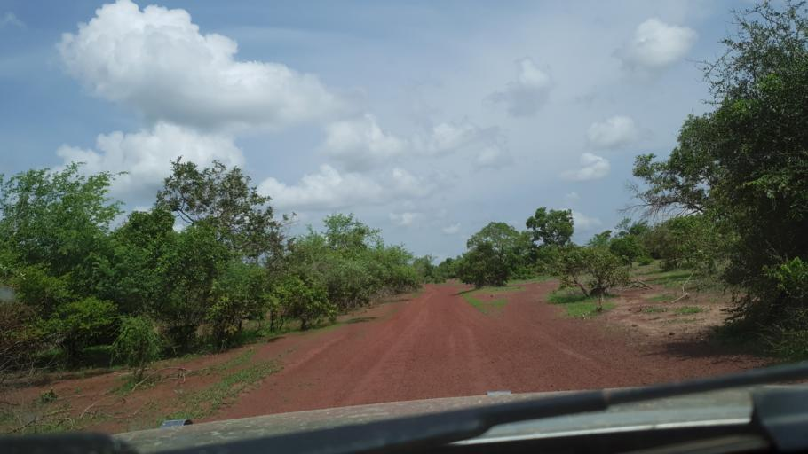
kosanka (Mali)
benjidad (Indonesia)
arizalkawamuna (Indonesia)
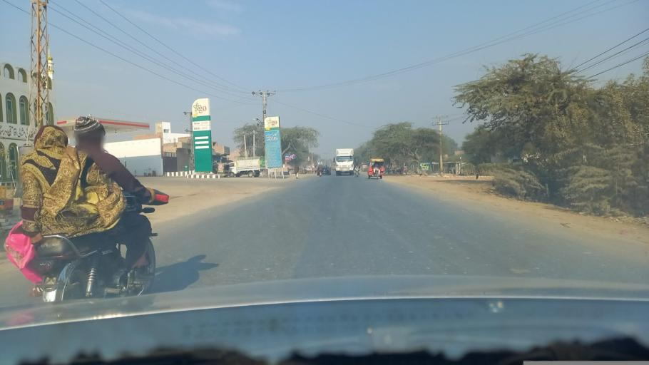
plannerqadeer for City Pulse (Pakistan)
sedicla (Chile)
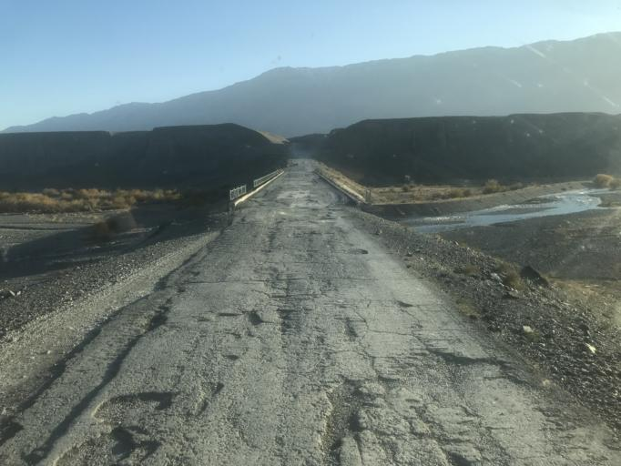
vik1607 (Kazakstan)
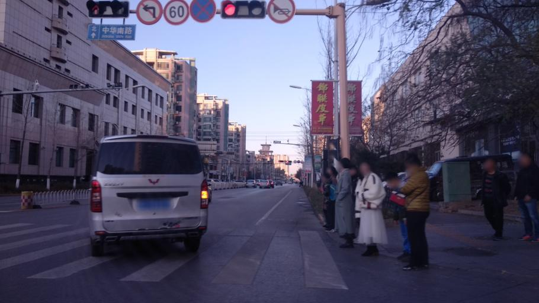
mapillario (China)
kmajcher for Here (Sweden)
vbombaerts (Oman)
caesium (Japan)
3stripes (New Zealand)
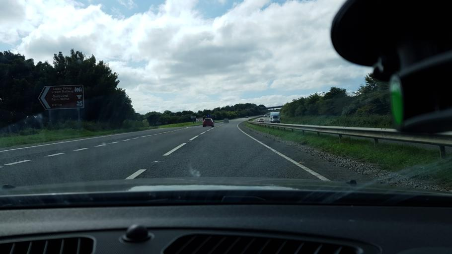
themadcabbie (England)
canadarunner (Utah)
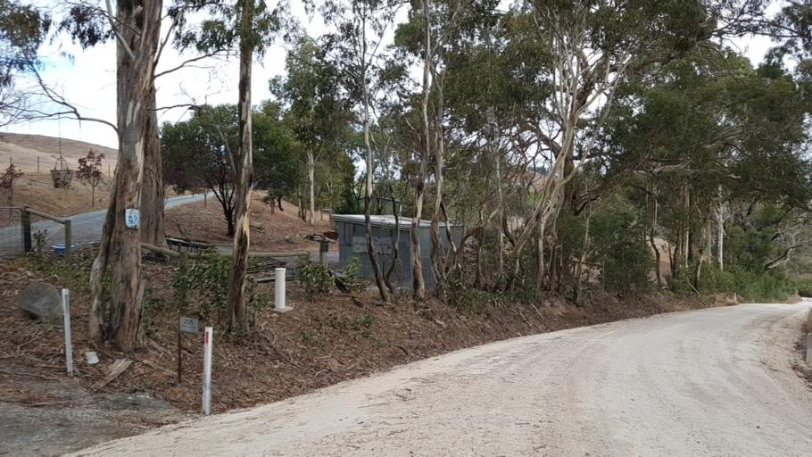
weinshaum (Australia)
Our dataset offers a wide variety of images, from urban to rural areas, well distributed across the globe.
We especially curate our dataset to fit as close as possible the real global spatial population density, with a priority on the test set.
We enforce a train and test spatial separation (1km) and sequence-wise.
This means that the network cannot rely on recognizing places to locate images, but must learn geographical cues to recognize countries and regions.
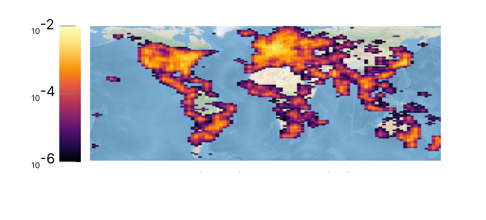
Train Density
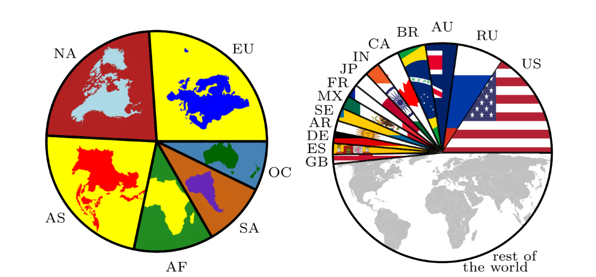
Train Distribution
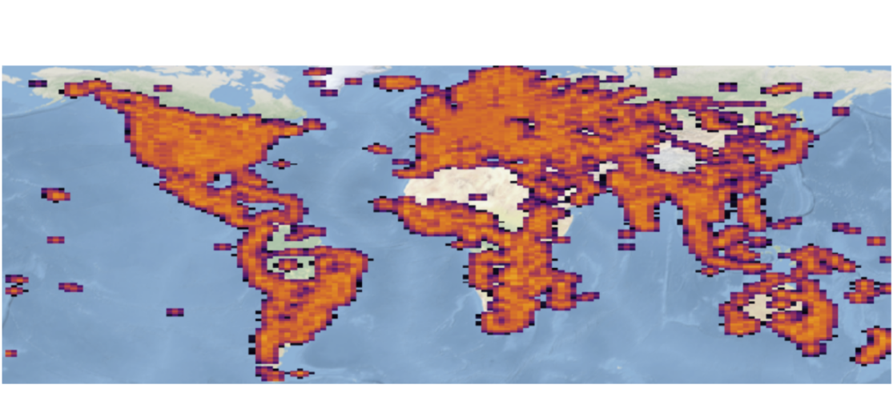
Test Density
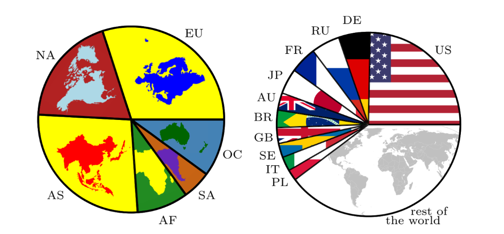
Test Distribution
Benchmark
We benchmark various state-of-the-art image encoders, spatial representations, and training strategies on our dataset.
We evaluate the relevance of learned geographical features beyond mere memorization.
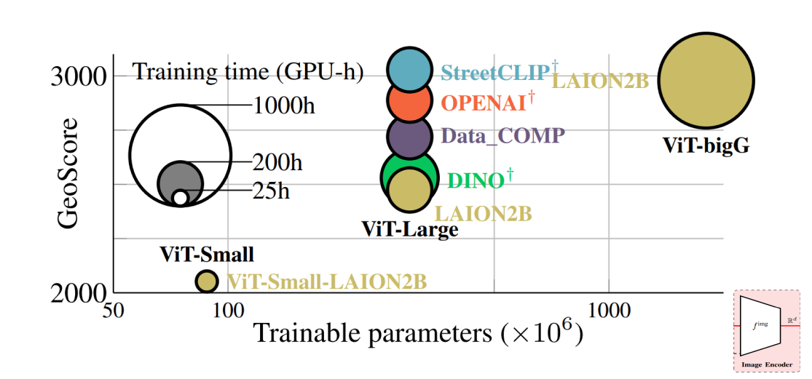
Backbone
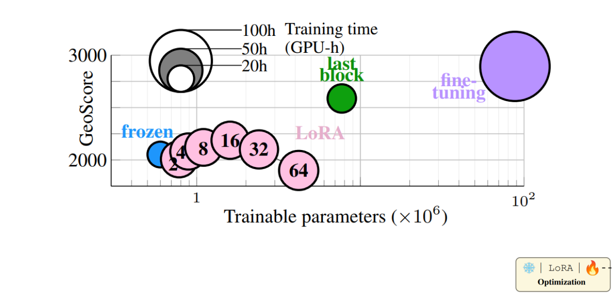
Finetuning
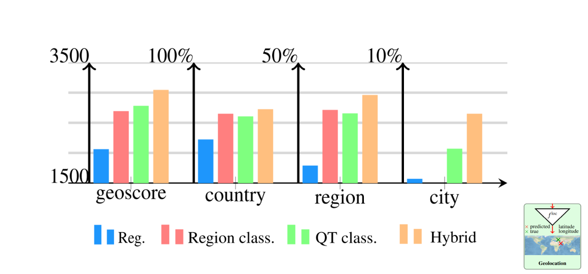
Prediction Head
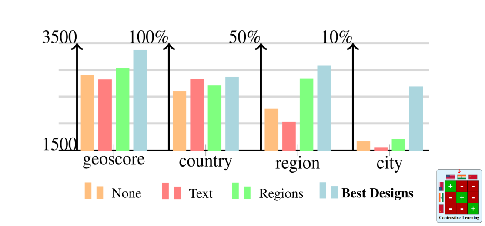
Contrastive
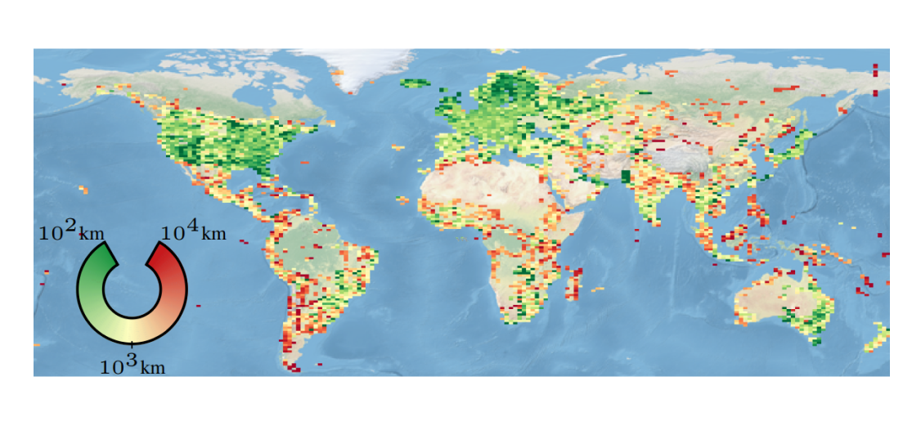
Error Map
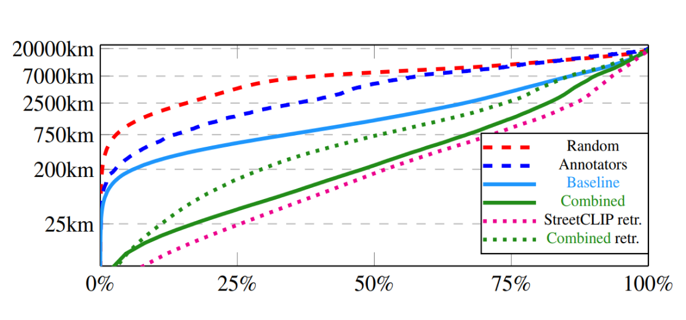
Error Distribution
Key Takeaways
Backbone: Pretraining is on par with increasing parameters with less cost.
Prediction Heads: Classifying with cell partitions (quadtrees) instead of administrative regions leads to higher performance. Hybrid classification-then-regression performs best.
Finetuning: Unfreezing the last transformer block is both more efficient and faster to train than using LoRA, suggesting that the pretrained models can extract relevant patch embeddings: only the way to combine them needs to be adapted for geolocation. Of course, fine-tuning the entire image encoder improves results even more.
Contrastive: Using regions to define the positive pairs in the contrastive loss outperforms text/image contrastive approaches.
Overall:Combining all best designs throughout our experiments leads to a strong visual geolocation baseline.
Cite Us
@article{osv-5m,
title = {OpenStreetView-5M: The Many Roads to Global Visual Geolocation},
author = {Astruc, Guillaume and Dufour, Nicolas and Siglidis, Ioannis
and Aronssohn, Constantin and Bouia, Nacim and Fu, Stephanie and Loiseau, Romain
and Nguyen, Van Nguyen and Raude, Charles and Vincent, Elliot and Xu, Lintao
and Zhou, Hongyu and Landrieu, Loic},
journal = {CVPR},
year = {2024},
}
Acknowledgments
OSV-5M was made possible through the generous support of the Mapillary team, which helped us navigate their vast street view image database. Our work was supported by the ANR project READY3D ANR-19-CE23-0007, and the HPC resources of IDRIS under the allocation AD011014719 made by GENCI. We thank Valérie Gouet for her valuable feedback and Ségolène Albouy for helping us make gradio-folium clickable (for our demo).